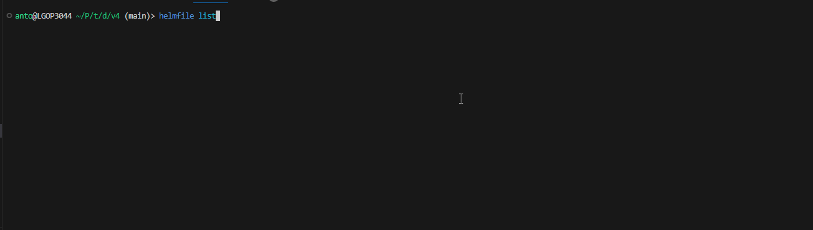

Going declarative with helmfile!
Antonin Brugnot
Stack de monitoring
- Cluster K8S
- Sandbox
- Prometheus/Grafana
- Helm
v1
On installe helm
Comme sur les tutos
ça fonctionne !
v2
Kubernetes Cluster Reset
install_monitoring.sh
Vous avez vu le problème ?
Amended Script
values.yaml
C'est mieux !
- Automatisable
- Sans prétention
v3
Pas suffisant dans la durée
- Manque de flexibilité
- Uninstall ?
- User friendly
- ...
manage_monitoring_stack.sh
Values
- Par défaut
- Souvent pas mal d'explications (si si)
- artifacthub.io
Moi

En réalité
- Sympathique...
- ... mais surtout inmaintenable
v4
Le projet
- helmfile/helmfile
- Plusieurs années
- v0.164.0
- v1.0.0-rc.0
- +100 contributeurs
- Beaucoup d'utilisateurs
Pourquoi ?
- Rendre helm déclaratif
- .... mais pas que
- kubectl/terraform
- + bonus
Helmfile
helmfile cli
helmfile init
- Installer helm si non présent
- ... ou trop vieux
- Et des plugins...
helmfile diff
- Utilise le plugin helm-diff
- preview d'un helm upgrade
- diff en la release installée sur le cluster
- ... et un helm upgrade --debug --dry-run
helmfile sync
- Appeler helm pour mettre le cluster dans l'état décrit dans le helmfile
- helm upgrade --install
- ...en déchiffrant les secrets
- Gère les repos
helmfile apply
- helmfile diff
- helmfile sync
Et les secrets ?
- helm-secrets
- sops / val
- gpg
- Chiffrement dans les sources
- Déchiffrement à l'installation
Generation clé gpg
.sops.yaml
Chiffrement
secrets.yaml
Les autres plugins
Utilisation
Layering
helmfile -- Wrapper de helm
A l'utilisation
- Fonctionne bien
- Maintenance simplifiée
- ... mais helmfile n'a pas encore tout montré
v5-final
Environnements
- Customisation du helmfile.yaml et des values.yaml
- dev, staging, prod
- --environment NAME
- La documentation
Kustomize
- Patching des ressources K8S après l'installation helm
- kubectl -k
- Natif
- La documentation
Integrations
- argocd-helmfile-plugin
- docker pull chatwork/helmfile
- Renovate
Merci !
bio.yaml
repo github (démos + slides)